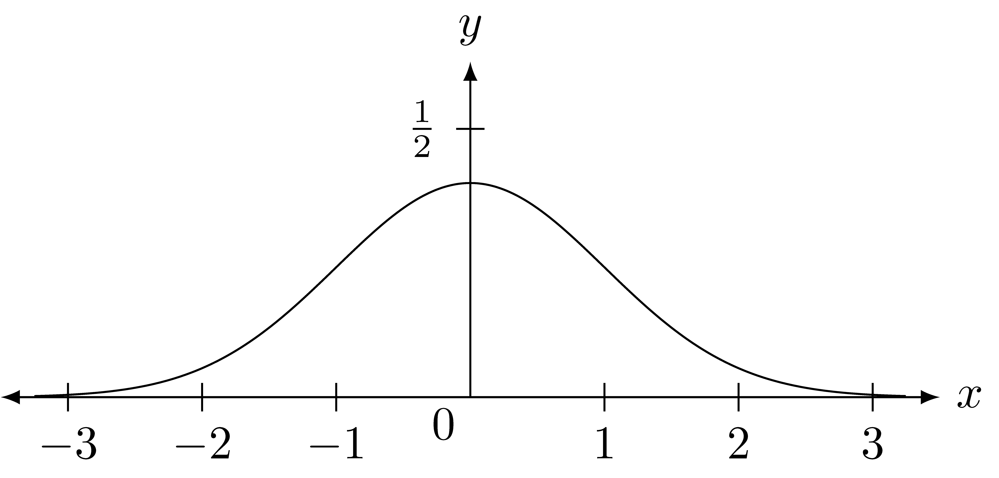

8.9 Combinations of Functions
Now that we have an understanding of the main functions in the K-12 curriculum we will look at some of the ways that these functions are combined to create new functions or to model various phenomena.
8.9.1 Addition, Subtraction, Multiplication, and Division of Functions
We will explore how functions can be combined through addition and subtraction by looking at an example from music. The note of middle C has a frequency of \(261.63\) Hz (cycles per second) and can be modeled by the function \(C(t)=\sin\left(261.63 \cdot (2\pi t)\right)\). If one doubles the number of cycles per second we obtain the next octave higher of the note of C, \(\tilde{C}(t) = \sin\left( 523.25 \cdot (2\pi t)\right)\). If we play these notes together, we have \[C(t)+ \tilde{C}(t) = \sin\left(261.63 \cdot (2\pi t)\right)+ \sin\left( 523.25 \cdot (2\pi t)\right)\] When the octave is divided into 8 parts, one finds that playing the 1st, 3rd, and 5th notes of the scale creates a very pleasing sound. We can see from the graph of the sum of the three sine functions corresponding the these three notes that the chord has a very complex structure.

The use of noise canceling headphones is another example of the adding and subtracting of functions. In this application, there is a microphone obtaining the noise that is in the surrounding environment and then subtracting that signal from the sound the person is hearing.
\[\begin{align*} \mbox{Sound produced by the headphones} &= \mbox{Sound of the music or speaking desired} \\ & -\mbox{Sound of surrounding environment} \end{align*}\]
There are many additional applications that involve the addition and subtraction of functions including \[\mbox{Net Profit} = \mbox{Revenue} -\mbox{Expenses}.\]
Some applications that involve the multiplication and/or division of functions include \[\begin{align*} \mbox{Work(time)} &= \mbox{Force(time)} \cdot \mbox{Distance(time)} \\ \mbox{Pressure} &= \frac{\mbox{Force}}{\mbox{Area}} \\ \mbox{Surface Area of a Cylinder} &= 2\pi \mbox{(radius)}\cdot \mbox{(height)} + 2 \pi (\mbox{radius})^2 \end{align*}\]
When functions are combined using the basic operations of addition, subtraction, multiplication, and division, the individual functions must have the same type of domain and the domain of the combined function would be the intersection of the domains of the individual functions, excluding any values for which a denominator may be undefined.
8.9.2 Composition of Functions
Another common way to combine functions is through function composition. An example of such a model is finding the area covered by a circular oil slick when the radius of the oil slick is changing with time. \[\mbox{Area(time)} = \pi \cdot \left( \mbox{radius(time)} \right)^2\]
Recall from Chapter 5 that with the composition of functions, for most cases, the domain of the second function corresponds with the domain of the first function.

However, we sometimes have compositions of functions for which the domain of the second function is a subset of the co-domain of the first function. For example, \[g(x) = \sqrt{x}, \quad f(x)=x-1, \quad \mbox{ and } \quad (g\circ f)(x) = \sqrt{x-1}.\] In this case, the domain of \(g\) is \([0,\infty) \subseteq \mathbb{R}\) and so the domain of the composition of the two functions, \(g\circ f\), is \([1,\infty)\).
In order to determine the domain and range of a composition of functions where the domain of the second function does not correspond to the co-domain of the first function, we need to define the pre-image of a function.

If \(\phi:U\rightarrow V\) and \(W \subseteq V\), we define the pre-image of \(W\) under the function \(\phi\) as, \[\phi^{-1}(W) = \left\{ a\in U \middle \vert \phi(a)\in W\right\}.\] Then if \[f:A\rightarrow B \quad \mbox{ and } \quad g:D\subseteq B \rightarrow C\] are functions, the domain of \(g\circ f\) is \[f^{-1} \left( (\mbox{Domain of } g) \cap (\mbox{Range of } f)\right).\]
Let’s look at how this applies to an example of compositions of linear fractional transformations.
Example 8.4 Let \(f:\mathbb{R}\setminus \{3\} \rightarrow \mathbb{R}\) and \(g:\mathbb{R}\setminus \{-1\} \rightarrow \mathbb{R}\) be defined by \[f(x) = \frac{2x-1}{x-3} \quad \mbox{ and } \quad g(x)=\frac{5x+2}{x+1}.\] Then the range of \(f\) is \(\mathbb{R} \setminus \{2\}\) and the domain of \(g\) is \(\mathbb{R}\setminus \{-1\}\). So the intersection is \(\mathbb{R}\setminus \{-1,2\}\) and \[f^{-1} \left(\mathbb{R} \setminus \{-1,2\} \right) = \mathbb{R} \setminus \left\{\frac{4}{3}, 3\right\},\] since \(f\left(\frac{4}{3}\right) = -1\).
So the domain of \(g\circ f\) is \(\mathbb{R} \setminus \left\{\frac{4}{3}, 3\right\}\) and we can determine the range of \(g\circ f\) by removing \(g(2)\) from the range of \(g\). So \[g\circ f : \mathbb{R} \setminus \left\{\frac{4}{3}, 3\right\} \rightarrow \mathbb{R} \setminus \left\{ 4,5 \right\}, \quad (g\circ f) (x) = \frac{12x-11}{3x-4}\] is a surjection.Once we have determined the domain and range of the composition of functions, we can use properties of each of the individual functions to determine properties of the composition of the functions.

8.9.3 Systems of Equations
The final method of combining multiple functions that we will study are determining the values for which a set of functions have the same input and output. The most common type of problems for which this occurs are systems of linear equations.
Sometimes it is valuable to know the values of \(x\) and \(y\) for which two equations, \[\begin{align*} ax+by &= \alpha \\ c x + d y &= \beta, \\ \end{align*}\] are true. In terms of functions, this can be viewed in multiple ways. One option is to think of the two equations as two different linear functions, \(f(x)=-\frac{a}{b} x + \frac{\alpha}{b}\) and \(g(x) = -\frac{c}{d} x + \frac{\beta}{d}\). We are then determining the values of \(x\) for which \(f(x)=g(x)\). With this perspective, one can think of this graphically as the points \((x,y)\) for which the two graphs, \(y=f(x)\) and \(y=g(x)\), intersect. Another method is to view the situation algebraically and determine the values of \(x\) for which \(-\frac{a}{b} x + \frac{\alpha}{b}=-\frac{c}{d} x + \frac{\beta}{d}\).
Another way to view this situation is through a linear algebra lens where we can write the system of equations in terms of a single function, \[L\left( \begin{pmatrix} x \\ y \end{pmatrix} \right) = \begin{pmatrix} a & b \\ c & d \end{pmatrix} \begin{pmatrix} x \\ y \end{pmatrix} + \begin{pmatrix} -\alpha \\ - \beta \end{pmatrix}.\] We are then trying to find the values for which \(L(x,y) = (0,0)\). These are the values \[\begin{pmatrix} x \\ y \end{pmatrix}= \begin{pmatrix} a & b \\ c & d \end{pmatrix}^{-1} \begin{pmatrix} \alpha \\ \beta \end{pmatrix}.\]
Each of these perspectives has strengths and weaknesses when generalized to different situations. If we generalize to a larger system of equations for which the variables are all linear, \(a_1 x_1 + a_2 x_2 + \cdot a_n x_n = b_n\), then the methods of linear algebra are often most efficient. If we generalize the system of two linear equations to different types of equations with two variables, \[\begin{matrix} 3x+2y=3 \\ x^+y^2=4 \end{matrix} \quad \mbox{ or } \quad \begin{matrix} x+y=8 \\ 3\cdot 2^x = 0 \end{matrix}\] then graphical methods are often the more efficient. If we combine these ideas to systems of non-linear equations with more than two variables, numerical analysis techniques are often employed to find numerical approximations to the system of equations.
Related Content Standards
- (8.EE.8) Analyze and solve pairs of simultaneous linear equations.
- Understand that solutions to a system of two linear equations in two variables correspond to points of intersection of their graphs, because points of intersection satisfy both equations simultaneously.
- Solve systems of two linear equations in two variables algebraically, and estimate solutions by graphing the equations. Solve simple cases by inspection. a.Solve real-world and mathematical problems leading to two linear equations in two variables.
- (HSA.REI.11) Explain why the x-coordinates of the points where the graphs of the equations \(y = f(x)\) and \(y = g(x)\) intersect are the solutions of the equation \(f(x) = g(x)\); find the solutions approximately, e.g., using technology to graph the functions, make tables of values, or find successive approximations. Include cases where \(f(x)\) and/or \(g(x)\) are linear, polynomial, rational, absolute value, exponential, and logarithmic functions.
8.9.4 Exercises
Domain and Range.2
- Find the domain and range of the following functions.
- \(\displaystyle{ f(x) =\frac{x^2}{(x^2+1)(x+3)}}\)
- \(\displaystyle{f(x)=\sqrt{x^2-16}}\)
- \(\displaystyle{f(x)=\frac{1}{\sqrt{2x-5}}}\)
- \(\displaystyle{f(x)= \frac{x^2-9}{x\sqrt{x^2-3x+2}}}\)
- Find functions with the following domains.
- The set of all real numbers less than or equal to 6
- The set of all real numbers between \(-2\) and \(2\) (including both \(-2\) and \(2\))
- The set of all real numbers between 1 and 4 (including both 1 and 4).
Give an algebraic representation for a function with the indicated domain and range.
- domain of \(\mathbb{R}\) and range of \(\{y\in \mathbb{R}\vert a\leq y \leq b\}\).
- domain of \(\{x\in \mathbb{R}\vert x>2\}\) and range of \(\{y\in \mathbb{R}\vert y>1\}\).
Find all solutions of the equation \[x^2-3 - \frac{1}{x^2-3} = 0.\]
Determine the zeros, vertical asymptotes, and end behavior of the function define by the given algebraic expression.
- \(f(x)=2\cdot 3^{x+2}\)
- \(g(y)=\frac{y^2+1}{y^2-1}\)
For each of the following pairs of functions, \(f\) and \(g\), give the domain, range, and a simplified formula for \(f\circ g\) and for \(g \circ f\).
- \(f(x)=\cos (x)\) and \(g(x)=\sin^{-1}(x)\)
- \(f(x)=\frac{1}{x}\) and \(g(x)=\sqrt{x^2-3x+2}\)
- \(f(x)=\ln(x-3)\) and \(g(x)=x^2+4\)
- \(f(x)=\frac{1}{x-2}\) and \(g(x)=\frac{1}{x-3}\)
Find an algebraic representation of a single function, \(f(x)\) that has all of the following characteristics.
- The domain of \(f\) is \((-\infty, -1) \cup (-1,4) \cup (4,\infty)\)
- The range of \(f\) is \((-\infty,\infty)\)
- \(\displaystyle{\lim_{x \rightarrow -1^-} f(x) = \infty}\)
- \(\displaystyle{\lim_{x \rightarrow -1^+} f(x) = -\infty}\)
- \(\displaystyle{\lim_{x \rightarrow 4^-} f(x) = -\infty}\)
- \(\displaystyle{\lim_{x \rightarrow 4^+} f(x) = \infty}\)
- \(f(1)=0\) and near \(x=1\), \(\displaystyle{f(x)\approx \frac{3}{10}(x-1)}\)
- \(f(-2)=0\) and near \(x=-2\), \(\displaystyle{f(x) \approx \frac{1}{4}(x+2)^2}\)
- \(f(3)=0\) and near \(x=3\), \(\displaystyle{f(x) \approx \frac{-5}{4}(x-3)}\)
- As \(x\rightarrow \pm \infty\), \(\displaystyle{f(x) \approx \frac{x^2+3x+4}{10}}\)
Consider the functions \[f(x)=1+\sqrt{7-2x} \quad \mbox{and} \quad g(x)=\frac{1}{3-\sqrt{x+5}}.\] Let \(h(x)=f(x) \cdot g(x)\). What is the domain and range of \(h\)? (Round any answers to the nearest tenth.)
If \(f(x)=|x-1|-2\), what is the vertex of \(y=f(x+2)-1\)?
Let \(f(x)=3\sqrt[4]{x} - \sqrt{x} -2\). Describe all of the features of the graph of \(y=f(x)\) without using technology and then verify with graphing technology.
From The World of Functions, part of the Interactive Mathematics Program↩︎